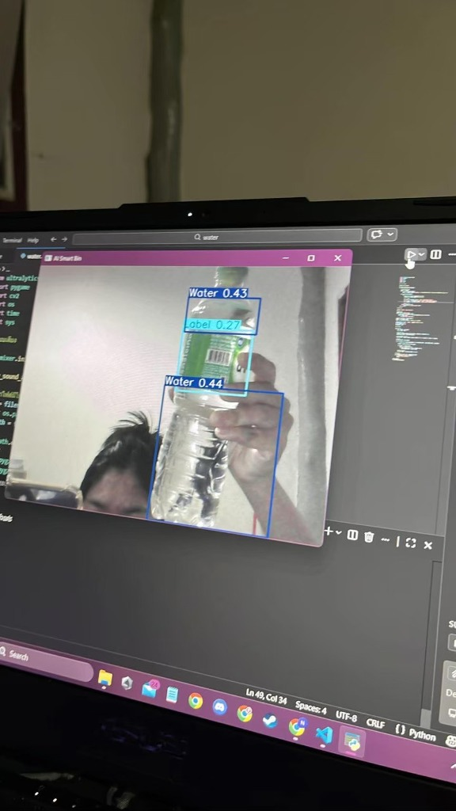
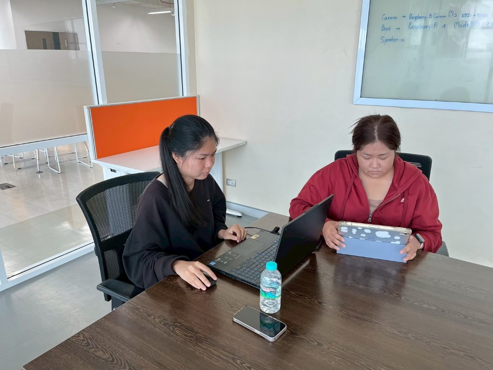
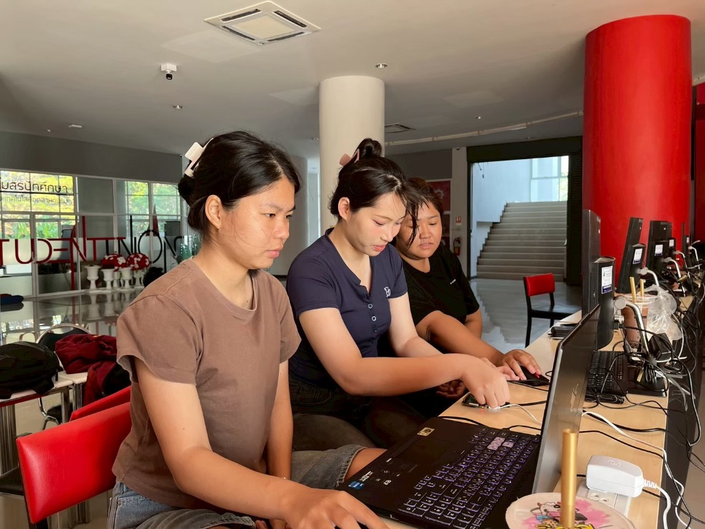

โครงงานนี้พัฒนาขึ้นเพื่อแก้ไขวิกฤตขยะพลาสติก โดยมุ่งเน้นการคัดแยกส่วนปนเปื้อนของขวดพลาสติก PET ตั้งแต่ต้นทาง (Source Sorting) เพื่อเพิ่มคุณภาพของเม็ดพลาสติกรีไซเคิล ระบบทำงานแบบซอฟต์แวร์ประมวลผลวิดีโอเรียลไทม์ผ่านกล้องในการตรวจจับองค์ประกอบสำคัญ 3 ส่วน ได้แก่ ฝา (Cap), ฉลาก (Label) และ น้ำคงค้างภายในขวด (Water)
ระบบจะทำการวิเคราะห์และตอบสนองกับผู้ใช้งานด้วยเสียงแจ้งเตือนภาษาไทย (Voice Feedback) แบบทันที เพื่อกระตุ้นให้ผู้ใช้งานแยกส่วนประกอบต่างๆ ออกจากขวดพลาสติกก่อนทิ้งลงสู่ถังขยะอย่างถูกต้อง
วิดีโอแสดงผลการทดสอบตัวต้นแบบระบบตรวจจับและแจ้งเตือนการคัดแยกขวดพลาสติก PET อัจฉริยะ (AI Smart Bin Prototype Testing) ในสภาวะการใช้งานจริง แสดงผลการตรวจจับวิเคราะห์อินพุตกล้องแบบเรียลไทม์ ทั้งส่วนฝา ฉลาก และน้ำคงค้าง พร้อมเสียงแจ้งเตือนแนะนำแบบออฟไลน์:
บรรยากาศการพัฒนาระบบควบคุมร่วมกันของคณะผู้จัดทำ:



ออกแบบระบบจัดการคิวเพื่อป้องกันไม่ให้เสียงตอบรับแต่ละประเภทพูดแทรกหรือซ้อนทับกัน โดยทำการกำหนดตรรกะแบบเรียงลำดับความสำคัญ (Sequential Order) เริ่มตรวจสอบจาก ฝา (Cap) → ฉลาก (Label) → น้ำคงค้าง (Water) พร้อมทั้งกำหนดระยะเวลาหน่วงที่เหมาะสม (Spacing) ช่วยลดการทำงานซ้ำซ้อนของหน่วยประมวลผลกลาง (CPU)
แก้ปัญหาภาพวิดีโอจากกล้องกระตุกหรือค้างขณะส่งเสียงแจ้งเตือน โดยการประยุกต์ใช้เทคนิคการเล่นไฟล์เสียงแบบแยกส่วนประมวลผลผ่านไลบรารี Pygame (ใช้ฟังก์ชัน get_busy ตรวจสอบสถานะการเล่นไฟล์) และปรับเปลี่ยนระบบเสียงจากการเรียกใช้ API แปลงข้อความเป็นเสียงออนไลน์ (Text-to-Speech) มาใช้การเรียกเล่นไฟล์เสียงต้นฉบับ (.mp3) ที่บันทึกไว้ในหน่วยความจำเครื่อง (Local Storage) โดยตรง ทำให้ระบบสามารถทำงานได้อย่างรวดเร็ว แม่นยำ และทำงานออฟไลน์ได้ 100%
เขียนและพัฒนาฟังก์ชันการดักจับข้อผิดพลาด (Safe Guard) เพื่อป้องกันการหยุดทำงานกะทันหันของตัวระบบ (Program Crash) ในสภาวะฮาร์ดแวร์ทำงานผิดปกติ เช่น กล้องหลุด หรือไฟล์เสียงหาไม่เจอ ทำให้โปรแกรมสามารถพยายามเชื่อมต่อและทำงานต่อไปได้โดยไม่หยุดชะงัก พร้อมส่งข้อความแจ้งเตือนข้อผิดพลาดเป็นภาษาไทยผ่านหน้าจอควบคุม (Console) เพื่อช่วยการแก้ไขหน้างาน
ในการเตรียมความพร้อมระบบควบคุมเพื่อทำงานร่วมกับกล้องและโมเดล AI ได้กำหนดค่าพารามิเตอร์ประสิทธิภาพและขั้นตอนการบูรณาการระบบดังนี้:
กำหนดค่าเฟรมเรตการรับภาพของกล้อง Webcam ความละเอียดสูง (HD) ไว้คงที่ที่ 30 FPS เพื่อให้ภาพลื่นไหลและประมวลผลเฟรมต่อเฟรมได้โดยไม่มีความหน่วง (Latency)
กำหนดค่าความเชื่อมั่นขั้นต่ำ (Confidence Threshold) ในการวิเคราะห์ตรวจจับไว้ที่ 50% (0.50) เพื่อคัดกรองสัญญาณรบกวนภายนอกและเงาสะท้อน
จากการประเมินผลตัวแบบตรวจจับ พบว่าตัวแบบ AI ตรวจจับ ฉลากขวด (Label) มีความเชื่อมั่นเฉลี่ยอยู่ที่ 0.65 และ ฝาขวด (Cap) มีความเชื่อมั่นเฉลี่ยอยู่ที่ 0.57 ซึ่งเพียงพอต่อการนำไปประยุกต์ใช้งานคัดแยกหน้ากล้องได้จริง
การบูรณาการลงบนบอร์ด Raspberry Pi 3:
คณะผู้จัดทำได้ทดลองโยกย้ายระบบซอฟต์แวร์ทั้งหมด (โมเดล YOLOv11 และระบบประมวลผลควบคุมเสียง) ไปรันบนบอร์ดคอมพิวเตอร์ขนาดเล็ก Raspberry Pi 3 เพื่อเป้าหมายในการพัฒนาเป็นอุปกรณ์เดี่ยวพกพา และพยายามทำการปรับแต่งโครงสร้างโค้ดหลายครั้งให้สอดรับกับสเปกบอร์ดที่จำกัด
ข้อจำกัดและปัญหาเชิงฮาร์ดแวร์:
จากการทดสอบจริงพบว่า สถาปัตยกรรมแบบจำลอง AI รุ่นใหม่ล่าสุด (YOLOv11) มีความซับซ้อนและใช้พละกำลังของ CPU/GPU สูงเกินขีดจำกัดความสามารถที่บอร์ดรุ่นเก่าอย่าง Raspberry Pi 3 จะรับไหว ส่งผลให้เกิดปัญหาตรรกะการประมวลผลและการตอบสนองทำงานผิดเพี้ยน ระบบล่าช้า และประสิทธิภาพตกต่ำลงอย่างเห็นได้ชัด
แนวทางแก้ไขและข้อสรุป:
เพื่อรักษาเสถียรภาพของการตรวจจับและคุณภาพเสียงเตือนให้ได้ตามมาตรฐานวิจัย คณะผู้จัดทำจึงตัดสินใจรันระบบการแสดงผลและคำนวณทั้งหมดผ่านเครื่องคอมพิวเตอร์ประมวลผลหลัก (Main Processing Unit) แทน โดยสรุปเป็นบทเรียนสำคัญว่า หากต้องการย่อระบบให้อยู่ในรูปอุปกรณ์พกพาอัจฉริยะ (IoT standalone Device) ในอนาคต จำเป็นต้องอัปเกรดไปใช้บอร์ดฝังตัวรุ่นที่รองรับการคำนวณด้าน AI/Deep Learning โดยเฉพาะ (เช่น Raspberry Pi 5 หรือ NVIDIA Jetson Nano)